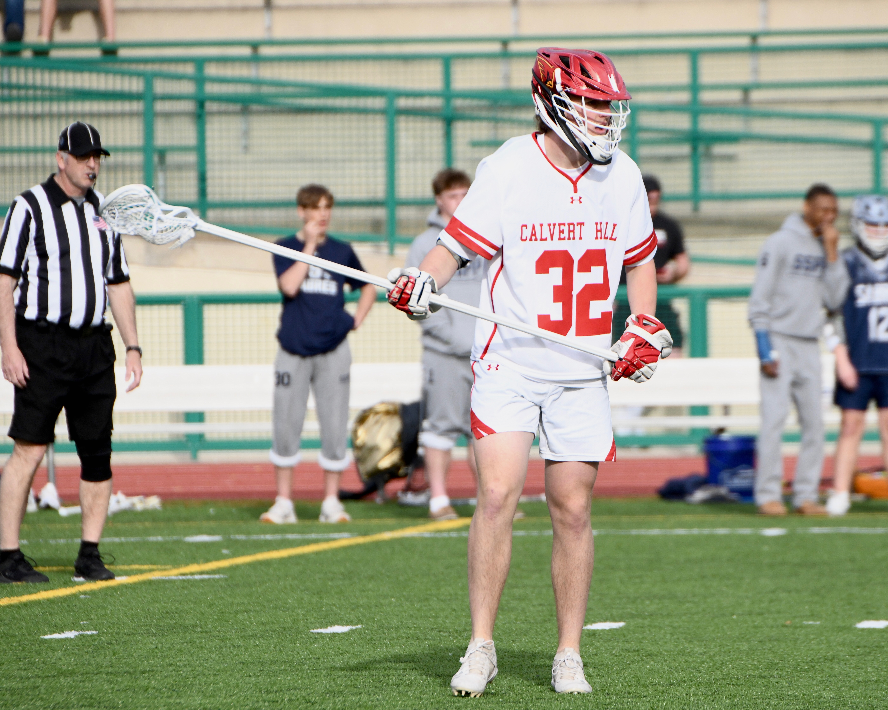
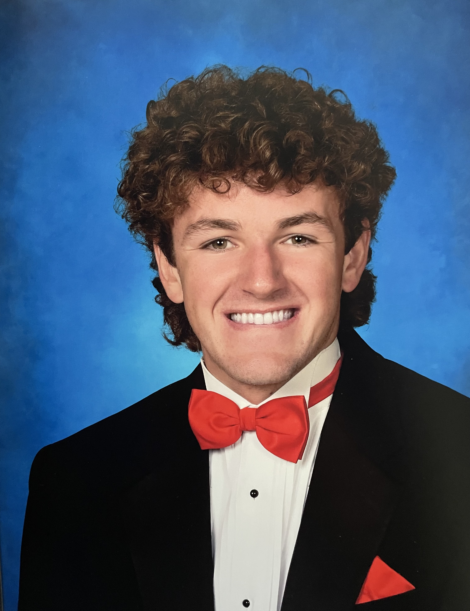
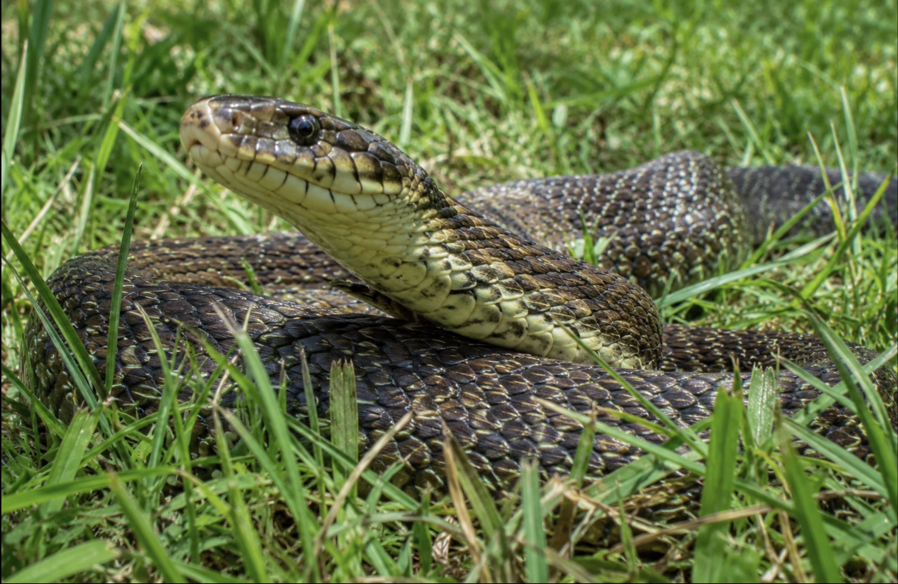

TEAM ACCOMPLISHMENT
High School Lacrosse Championships
I was part of a high school lacrosse team that won championships in two consecutive years.
Sports Media · Ithaca College
Freshman Sports Media major
I’m interested in sports journalism and broadcasting, and in finding thoughtful ways to tell the stories behind the games.
Connect on LinkedIn
A little about me
I’m a freshman at Ithaca College majoring in Sports Media. I’m from Perry Hall, Maryland, and I’m interested in sports journalism, broadcasting, and storytelling.
Selected work & milestones
A couple of experiences that have shaped my interest in sports and visual storytelling.

TEAM ACCOMPLISHMENT
I was part of a high school lacrosse team that won championships in two consecutive years.

VISUAL PROJECTS
I have experience creating detailed digital images and experimenting with visual design.
What I’m exploring
I’m building my skills as a Sports Media student and enjoy exploring different ways to share stories about sports.
Let’s connect